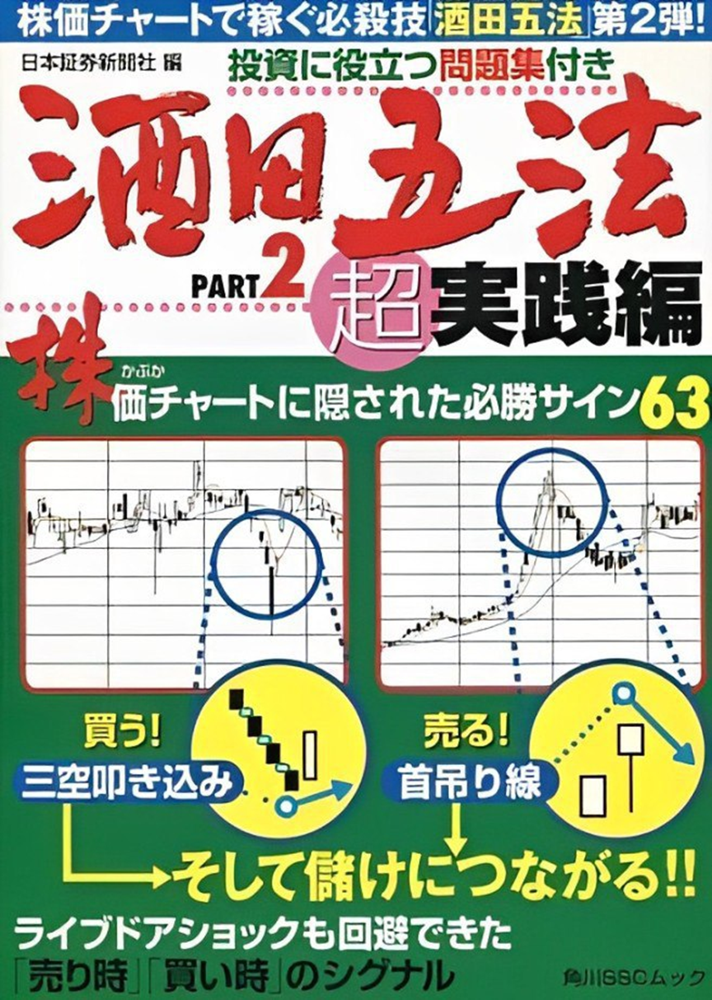

ローソク足パターンの傾向分析 ──システムトレード大会優勝者がチャートの通説を統計解析現代の錬金術師シリーズ
先生が意図的に「ローソク足」のチュートリアルをシンプルでわかりやすい方法で作成し、みんなに共有しました。
皆様も株式市場取引における運用上の参考ガイドラインをもっと持っていただければと思います。
ローソク足チャートは、すべての投資家にとって投機のための最良のツールです。ローソク足の形やパターンを読み解くことで、チャートから株価の動きを予測し、買いのタイミング、売りのタイミングを見つけましょう。ローソク足チャートは株式だけではなく、外国為替や仮想通貨といった投資全般で有効です。
5銘柄で4.85%の利回り！
私たちが普段よく見ているローソク足ですが、実は日本の江戸時代に誕生しました。
その後、欧米でもローソク足が知られるようになり、世界中のトレーダーがローソク足チャートを見て、トレードを行っています。
ローソク足の考案者については諸説ありますが、相場師の「本間宗久（ほんまそうきゅう）」という人物であると言われています。
彼は江戸時代の米相場で財産を築いた人物です。
本間宗久は現在の山形県酒田市出身で、『酒田五法』という手法の名前の由来にもなっています。
今回紹介するのは「酒田五法」というローソク足の分析手法です。
『プライスアクション』や『チャートパターン分析』とも言い換えることができます。
多くのトレーダーが知っているトリプルトップは『三山（さんざん）』、ヘッドアンドショルダーは『三尊（さんぞん）』という名前で酒田五法の中にまとめられています。
酒田五法の考えた方を知れば、ローソク足だけでトレードするプライスアクションや、チャートパターン分析の考え方が理解できるようになります。
本書は、日本株27年間3862銘柄1483万5838取引のデータからローソク足パターン
の「現実」を分析したものである。
「三川明けの明星」「十字星」「はらみ線」「三空叩き込み」など、35種類のパターンを「全期間」だけでなく「6つの期間」で解析し、そこにみられる「傾向（バイアス）」を考察した。
期間を6つに分類したのは、株価には上昇基調のときもあれば、もみ合いのと き、下落基調のときもあるからだ。こうした相場局面にかかわらず「傾向」に変
わりがなければ、ある程度の持続性、つまり「人間の本能的な相場行動パター ン」が見えてくる。
今回の統計分析から、通説が事実にそぐわないケースと、事実どおりのケースが あることが明らかになった。
本書で提示したような膨大なデータから値動きの「傾向」を探し出す作業は、短期売買、デイトレード、スイングトレードの研究に役立つだろう。システムト
レードでも、こうした優位性（エッジ）を最大限に発揮するための「売買戦術の
着想」に役立つはずだ。

酒田五法には非常にたくさんの組み合わせがあるのですべてを正確に覚える必要はありません。ただ、さきほどの基本形などを頭に入れておけば、今後の展開を予想するための強力な判断材料になることは間違いありません。特に相場の天底でのトレンド転換を察知するのにとても便利です。
酒田五法のキーワードとなる数字は「3」です。三山などが典型ですが、相場の値動きにはちょうど「N」の字を書くような3つの波動や流れがあって、その組み合わせで相場の勢いが変化したり加速したりするというのが、酒田五法の基本的な考え方といえるでしょう。